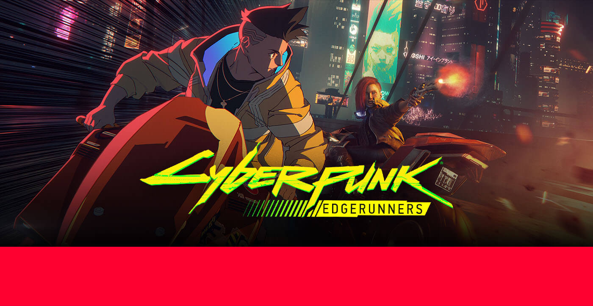
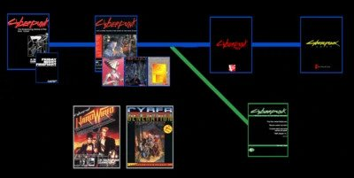
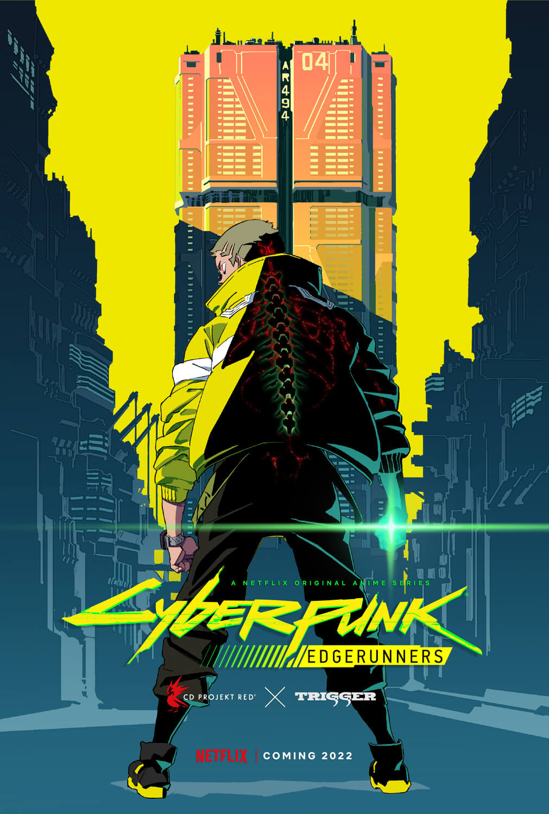

Cyberpunk Timeline is massive
The Game is in 2077 year, anime lead us to 2076 but the whole timeline is something different that we know from our experience.

Such a wonderful Lore deserve what is best, best community, characters, passion, love, and so on
And we are in a really good way to bring what is best to our community
because if not us, who could be to bring magnificence to this world ? this guys from it huh ? please, don't make me laugh.
Soo Let's GO ! Just do it!
The timeline of the Cyberpunk series has gone through many iterations, with new
sourcebooks and games continually expanding on its world. This article covers the canonical timeline
following events from Cyberpunk 2013 and Cyberpunk 2020, as established by R. Talsorian Games and CD Projekt
RED in Cyberpunk RED and Cyberpunk 2077. Information about the non-canon Cyberpunk Version 3.0 and its
alternate timeline can be found here.
Other timelines are included within the Japan, China, Soviet Union, Korea, and Australia articles, as well
as those for South-East Asia and Europe.


We have impmresive collection of books, comics and guides in our fanbase. Don't be shy an check them all !

The Saint Grall in our colection. On Rotten Tomatoes we gain 100% positive Rating. 100% TOMATOMETER and 96% AUDIENCE SCORE. That's IMPRESSIVE !
And Game itself ! Woah The graphic in night city, you need at least RTX 4090 to deal with it in 4k Hell yeah ! What an immersive!
- Cyberpunk is a subgenre of science fiction in a dystopian futuristic setting that tends to focus on a "combination of low-life and high tech"
- featuring advanced technological and scientific achievements, such as artificial intelligence and cybernetics, juxtaposed with a degree of breakdown or radical change in the social order.
- Much of cyberpunk is rooted in the New Wave science fiction movement of the 1960s and 1970s, when writers like Philip K. Dick, Roger Zelazny, John Brunner, J. G. Ballard, Philip José Farmer and Harlan Ellison examined the impact of drug culture, technology,
- and the sexual revolution while avoiding the utopian tendencies of earlier science fiction.
- Cyberpunk is a subgenre of science fiction in a dystopian futuristic setting that tends to focus on a "combination of low-life and high tech"
- featuring advanced technological and scientific achievements, such as artificial intelligence and cybernetics, juxtaposed with a degree of breakdown or radical change in the social order.
- Much of cyberpunk is rooted in the New Wave science fiction movement of the 1960s and 1970s, when writers like Philip K. Dick, Roger Zelazny, John Brunner, J. G. Ballard, Philip José Farmer and Harlan Ellison examined the impact of drug culture, technology,
- and the sexual revolution while avoiding the utopian tendencies of earlier science fiction.